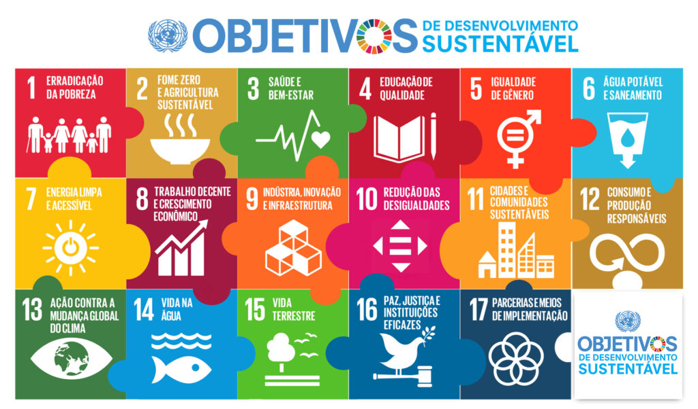

Energia Sustentavel: Desafios para o avanço
ENERGIA LIMPA E SUSTENTÁVEL PARA TODOS É O COMPROMISSO DO ODS 7 PARA 2030
A energia é o coração da vida moderna, impulsionando o crescimento econômico, melhorando o acesso à educação, à saúde e a outras necessidades básicas. No entanto, muitas comunidades ainda não têm acesso a fontes de energia confiáveis, o que limita as suas oportunidades de desenvolvimento. Além disso, a dependência dos combustíveis fósseis contribui para as mudanças climáticas, ameaçando nosso planeta e suas futuras gerações.
O que são os ODS?
Os Objetivos de Desenvolvimento Sustentável (ODS), são uma iniciativa aberta pelas Nações Unidas para abordar uma variedade de desafios globais até o ano de 2030. Os ODS são um conjunto de 17 objetivos interligados e ambiciosos, acompanhados por 169 metas específicos, que visam abordar questões como pobreza, desigualdade, mudança climática, educação, água limpa, energia sustentável, paz e justiça, entre outros.
Esses objetivos foram oficialmente aprovados em setembro de 2015 pelos 193 países-membros da Assembleia Geral das Nações Unidas. Eles formam a Agenda 2030 para o Desenvolvimento Sustentável e são destinados a ser um plano global para promover o desenvolvimento econômico, social e ambientalmente sustentável em todo o mundo.
Cada objetivo possui metas específicas para ser alcançados até 2030, e os governos, organizações da sociedade civil, setor privado e cidadãos em geral são incentivados a colaborar para atingir esses objetivos e criar um mundo mais justo, equitativo e sustentável.
ODS 7 e seus objetivos
Como o Brasil esta caminhando
Sobre mim
Olá me chamo Denise tenho 25 anos e estou cursando o primeiro semestre de engenharia de software.